Lab-1: Getting Started#
Lab Overview – What’s in the lab?#
Lab time: ~15 minutes In this lab, we are going to explore our lab environment. The diagram below shows the current state of the lab environment. You will extend this environment during the exercises. The instructor will briefly explain the lab setup in the diagram.
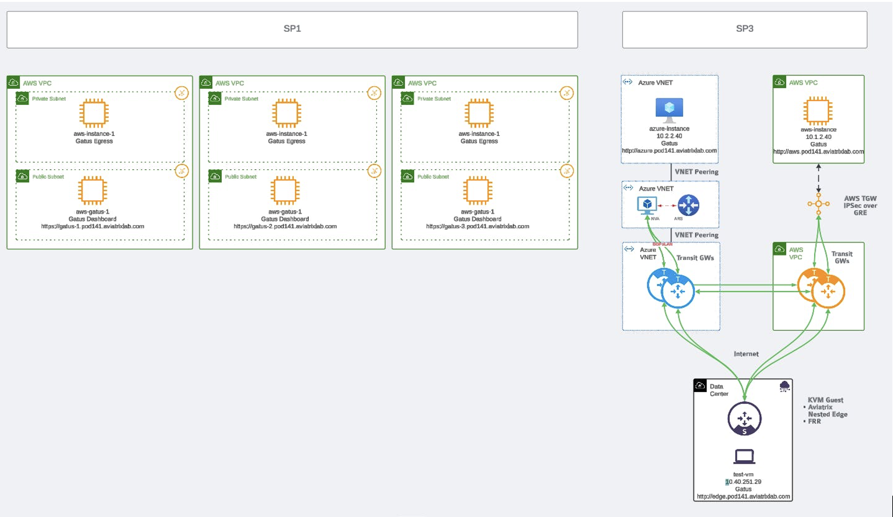
Fig. 1 Lab Overview#
Lab 1.1 - CoPilot#
Description#
Along with the Aviatrix Controller, CoPilot is also deployed. CoPilot will be your best buddy for configuring, visualizing and operating the Multicloud environment.
Validate#
Log in to CoPilot using the following details:
URL: https://cplt.pod[#].aviatrixlab.com
Username: student
Password: Please refer to your portal registration page for the password.
Remember to replace [#] with your pod ID
Note
CoPilot details are available on your personal POD Portal!
You can access to your CoPilot directly clicking on the "Open Copilot" button!
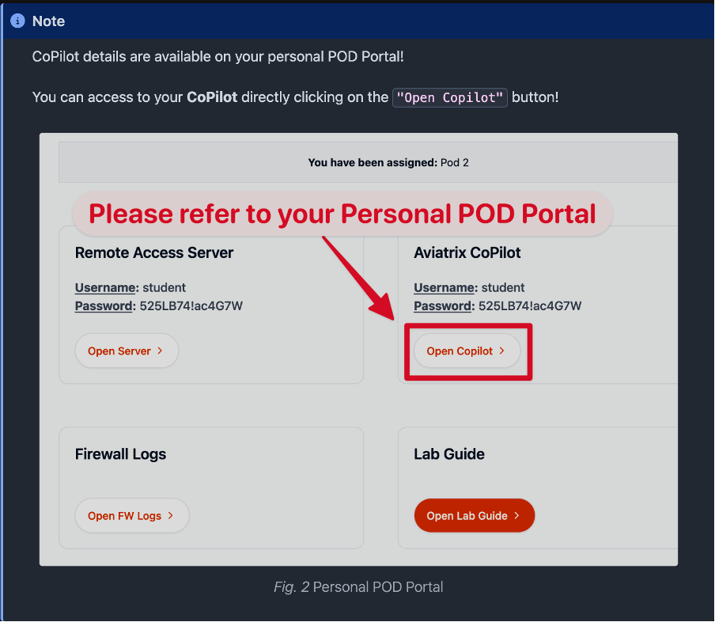
Fig. 2 Personal POD Portal#
You can familiarize yourself with the different functions in CoPilot and after each lab, we will verify the results in CoPilot. Please note that it can take a minute for CoPilot to reflect changes on the network.
The Dashboard tab provides a global overview of your Multicloud network, the status, how much traffic is flowing, locations deployed, etc.
Look into Cloud Fabric-->Topology which visualizes the connectivity of the Multicloud environment. Topology will show you latency between links when you enable it on the top right-hand corner in the latency pane. The topology view also allows you to initiate some troubleshooting commands directly from the map. Expand transit-azure in the middle of the screen, by clicking on it. Now you should see and be able to select the transit-azure gateway on the outside edge of the diagram. On the bottom right, you should see a diagnostics button. Click that and explore the diagnostics capabilities.
Expected Results#
You should be able to log in to CoPilot. You should be able to view Topology by clicking Cloud Fabric -> Topology and see the current Multicloud Network topology. Topology should look like this:
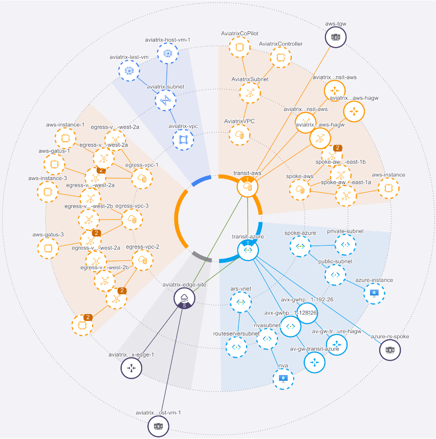
Fig. 3 Topology View#
Click on the Managed button on the right-hand side of the screen, for hiding the Unmanaged VPCs.
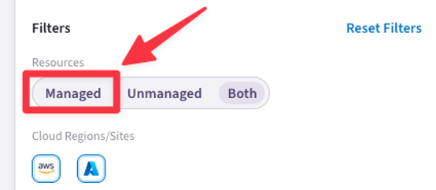
Fig. 4 Topology Filters#
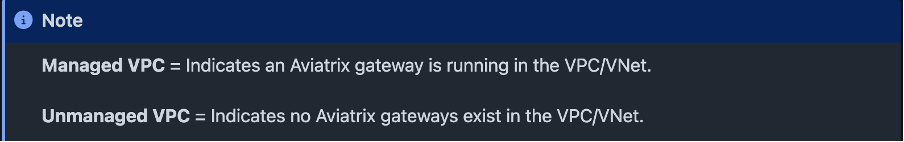
Fig. 5 Filter Descriptions#
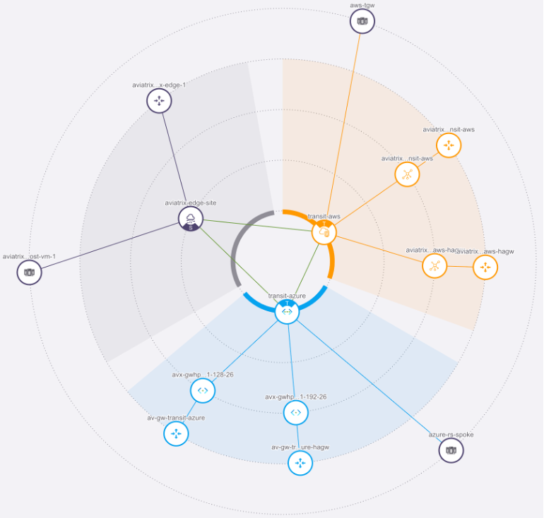
Fig. 6 Filtered Topology View#
As you can see, we have the transit gateways and edge which are not connected to each other yet.
After selecting the Transit Gateway icon, scroll down through all its properties on the right-hand side and click on the Tools button, then select the Gateway Diagnostics.
Have a look around at the troubleshooting tools here.
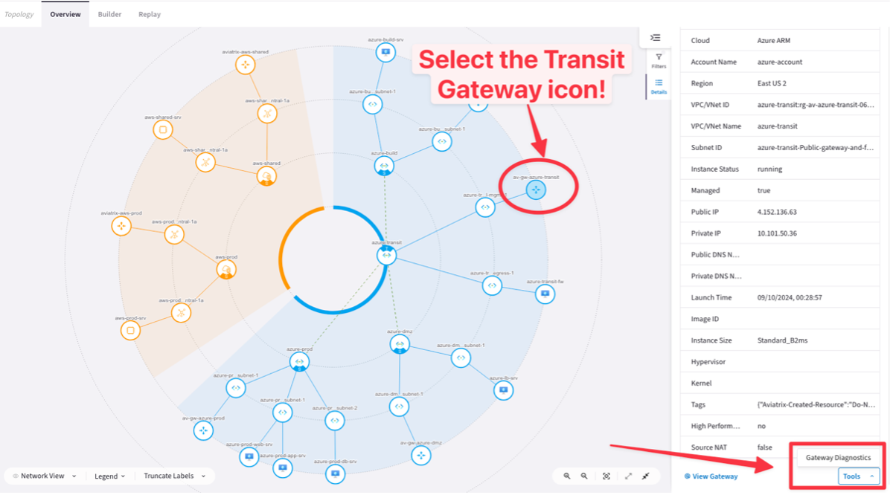
Fig. 7 Diagnostic Tools#
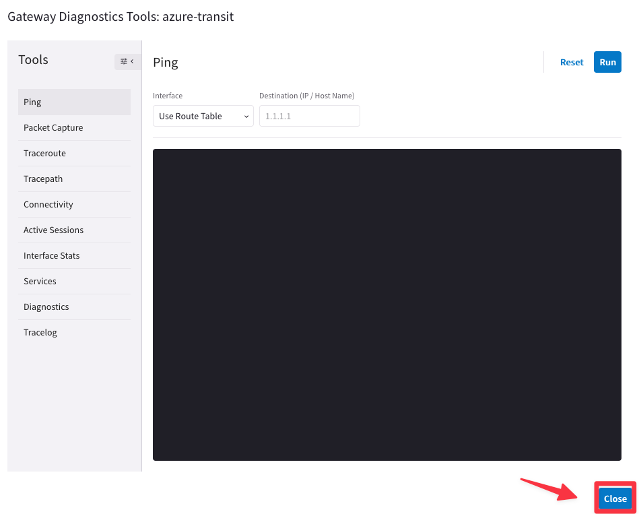
Fig. 8 Diagnostic Tools#
Close the diagnostics pane.
Lab 1.2 - Access Accounts#
Description#
For the controller to be able to access the different CSP environments, we need to provide it with accounts with the correct privileges.
Validate#
Look at the access accounts already set up. You can see them in Copilot under Cloud Resources -> Cloud Account.
Expected Results#
Accounts in AWS and Azure have already been onboarded, and you should see these accounts in the list. The accounts should also have an audit status equal to pass, meaning the permissions in the accounts are correctly configured.
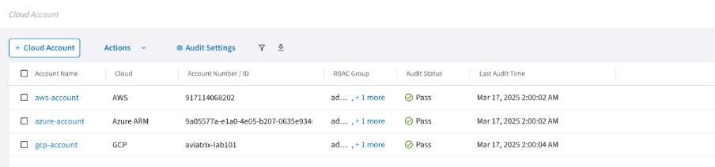
Fig. 9 Cloud Accounts#
Lab 1.3 - Connectivity Check#
Description#
Each Spoke VPC / VNet contains one or multiple Linux VM’s to test connectivity. There is a web server running on each of the instances which you can use to test the connectivity. The purpose of this exercise is to verify the connectivity between Linux VMs in the Spoke VPCs / VNets in the different clouds as well as the Edge network. To make life a little easier, we have created multiple dashboards to show the status of all connectivity.
Validate#
To view the connectivity dashboards, some Gatus servers are implemented in the system. We need to log on to these servers we have deployed throughout the lab which can be accessed here:
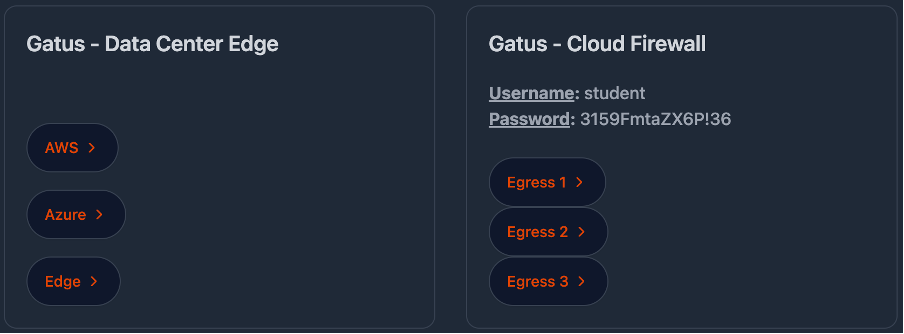
Fig. 10 Test Dashboard Access#
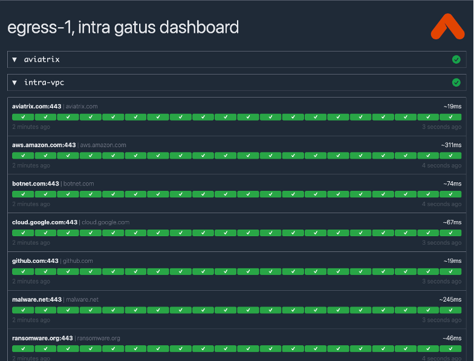
Fig. 11 Test Dashboard#
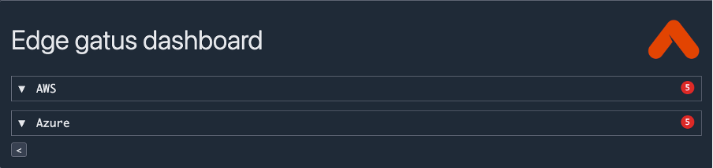
Fig. 12 Edge Test Dashboard#
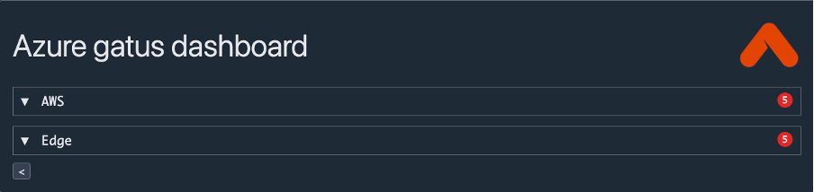
Fig. 13 Azure Test Dashboard#
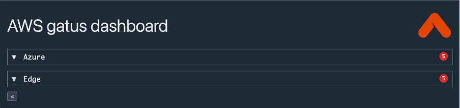
Fig. 14 AWS Test Dashboard#
Expected Results#
All the egress connections will look green, as no filtering is applied yet.
Azure, AWS, and Edge Gatus servers will all have red indicators as the Aviatrix transit gateways and Edge Gateway doesn’t have connection in place, one it’s done the indicators will turn to green.
End of lab 1#
Ok, that’s the end of Lab 1. Great job!